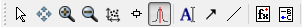

Fitting Models To Data¶
Fitting is the modelling of data where parameters of a model are allowed to vary during a fitting process until the agreement between model and data has seen an improvement according to some cost function.
In summary the Mantid fitting provides
General fitting capabilities
Fitting extras, that make use of data log file and instrument geometry information to enhance the user fitting experience
Easily expandable
The main focus of this basic course is to cover the basic mantid fitting capabilities.
Simple fitting¶
1. Plot a data set. We will use data from MUSR00015189_cropped.nxs file.
Select the fitting tool button: 
Right click on the plot to select a fitting function.

{kind=link}
{kind=link}
{kind=link}
A more complex case¶
Activating the fitting tools¶
Open any data, here HRP39182.raw and plot first spectrum
Zoom in on any peak, for example the peak near 93150 microseconds
Close to the zoom toolbar button, click on the Fit Function toolbar button: . If this toolbar is not visible ensure that View->Toolbars…->Plot is ticked.
{kind=link}
Three things happens when you click on the Fit Function toolbar button
The Fit Function toolbox, by default, will position itself on the left side of MantidPlot (if not already docked somewhere else)
fit function items are adding to the plot, initially the two vertical dashed lines highlighted in red in the image above
and additional right click menu options becomes available on the plot window
Selecting the fitting range¶
The fitting range is the region of the data where you will attempt to do a fit.
This vertical dashed lines shows the fitting region of the data. These are in sync with the Fit Function setting properties: StartX and EndX values highlighted in green in the image above.
Use the mouse to adjust the vertical dashed lines and therefore the fitting range. Notice the StartX and EndX get updated in the Fit Function property browser.
Alternative adjust StartX and EndX in the Fit Function property browser which will adjust the positions of the vertical dashed lines
Other Fit Function Settings properties¶
In addition to StartX and EndX there are a number of other essential fit setting properties including:
Workspace and Workspace Index: what data to fit. Note typically you should not need to update these manually, these gets updated automatically as the Fit Function button is used to associate the Fit Function toolbox with different plots
Minimizer: Here you chose between a number of minimizer to search for better fit to a model
Cost function: The function used to specify the quality of a fit.
Plot Difference: When the result of a fit is displayed optionally the difference between the model and the fit can also be displayed
More documentation of these is available from Fitting.
Setting up a fit model¶
Here start up with building up a model consisting of one peak and one background function.
This can in fact be done using just the Fit Function toolbox. However in practice it is advantegeous to also use the fitting tools available on the plot and from the plot right click menu.
Select the right click plot menu option ‘Add peak…’. This pops up a new window and in the combobox, select Gaussian. The mouse cursor then changes to a cross. Move this cross near the top of the peak and click any mouse button
Click on the red line and drag it sideways to set the initial width (FWHM) of the peak.
Now you can see 3 red lines - one solid line indicating peak’s position and height, and two dashed ones representing the width of the peak. The dashed lines usually show the points of half peak’s maximum. All three lines can be dragged within the plot to modify its centre, height or with parameters which is instantly reflected in the Fit Function browser.
Select the right click plot menu option ‘Add background…’. This pops up a new window and in the combobox, select FlatBackground
{kind=link}
{kind=link}
The result of this is
{kind=link}
Note that a vertical line has appeared in the plot where the peak was positioned and two fit function entries have appeared in the Fit Function property browser called ‘f0-Gaussian’ and ‘f1-FlatBackground’.
In summary from the Fit Function property browser you have created model consisting of a CompositeFunction which contains a Gaussian and a flat-background. The CompositeFunction part means that the model is sum of its parts, i.e. here the model is
`` ‘f0-Gaussian’ + ‘f1-FlatBackground’``
Adjusting fit function parameter¶
When you do fitting the starting fit function parameter values can greatly affect both the speed and the result you obtain from fitting. In general you want to use staring parameter that are a close as possible to the result you want to obtain.
Fit tools are available on the plot to help you with doing this. In doing this it can be helpful to turn on Plot Guess,
{kind=link}
what this means does is to plot how the model you have created looks like compared to your data.
{kind=link}
The aim is to have this plot and your data overlap reasonable well before you do the actual fit. Note this is not an absolute requirement but your chances of a successful fit increase this way.
Saving a model¶
If you have spend a considerable amount of type setting up a model you can save it and then load it later.
{kind=link}
{kind=link}
{kind=link}
After saving the model it can be imported into Fit Function browser at any time using Custom Setup option from the same menu. Importing (loading) a model replaces all functions in the browser.
Tying and constraining fit parameters¶
Mantid fitting framework allows you to tie or constrain parameters during the fit. We define tying as setting a parameter equal to a result of an expression involving other parameters of the same function. The expression can be a constant (doesn’t involve any parameters), in this case we call the tied parameter fixed.
By constraining we understand setting conditions on acceptable values of a parameter. For example limiting its value from below or above.
To set a constraint or a tie right click on a parameter name:
The menu offers three options:
Fix: tie this parameter to its current value.
Constraint: set a bounding constraining condition - define a lower or upper bound, or both.
Tie: tie this parameter to an arbitrary expression.
The tying expression can be as simple as a parameter name:
f0.Height
Note that parameter names of a model include prefixes such as “f0.” which indicate the particular function they belong to.
A more interesting example is setting parameter f1.A0 from our earlier model to formula
20-f0.Height
This will ensure that the maximum point is exactly 20 units above 0.
Execute your fit¶
After the model has been defined, its initial values are set, any ties and constraints defined we are ready to run a fit. It is done by selecting the Fit option from the Fit menu:
Inspecting a fit result¶
After a successful fit the results can be examined in three ways.
The Fit Function property browser will show the fitted parameters instead of their initial values.
A plot of the fitted model will be added to the graph along with the difference with the original data.
Output workspaces will be created and available via the workspace dock.
{kind=link}
There are three output workspaces:
1. A TableWorkspace with the name suffixed with “_Parameters”. It contains the fitting parameters and their corresponding errors.
{kind=link}
2. A MatrixWorkspace with the name suffixed with “_Workspace”. Its first three spectra are: the original data, the calculated model, and the difference.
{kind=link}
3. A TableWorkspace with the name suffixed with “_NormalisedCovarianceMatrix”. It contains the variance-covariance matrix normalized to 100.